Inverno
- Dicembre
- Gennaio
- Febbraio
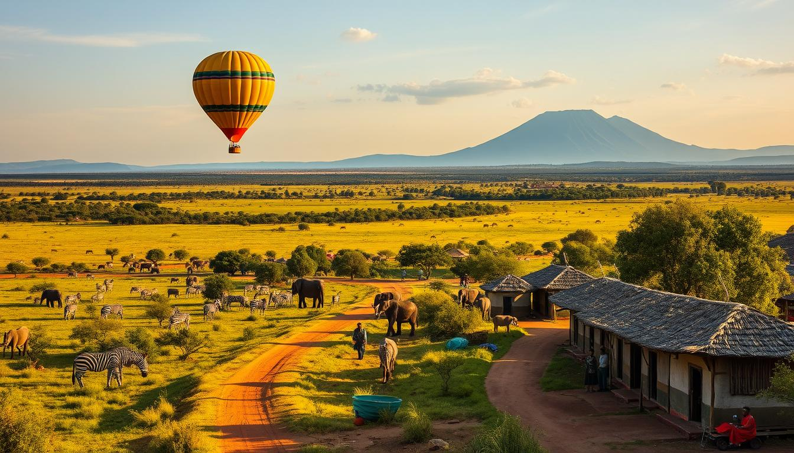
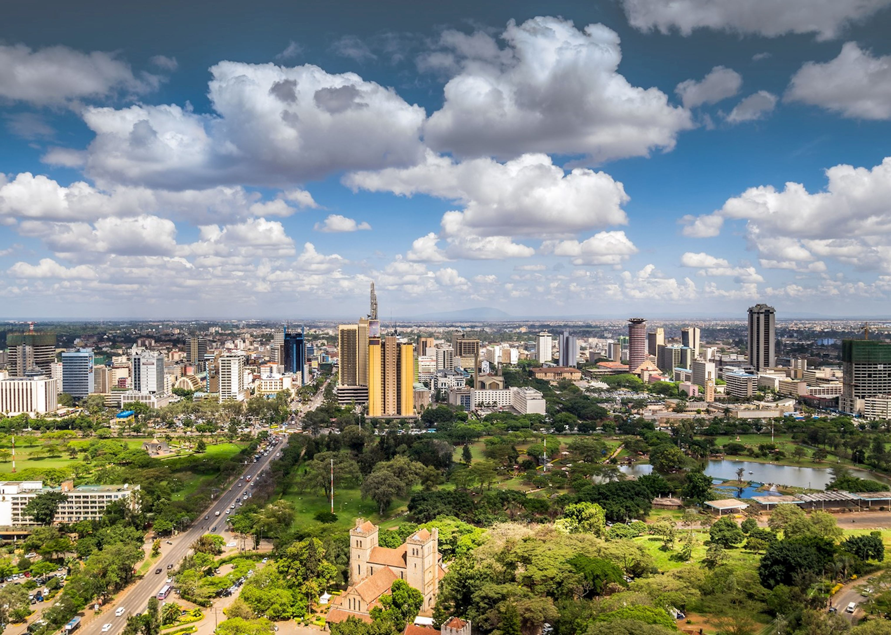
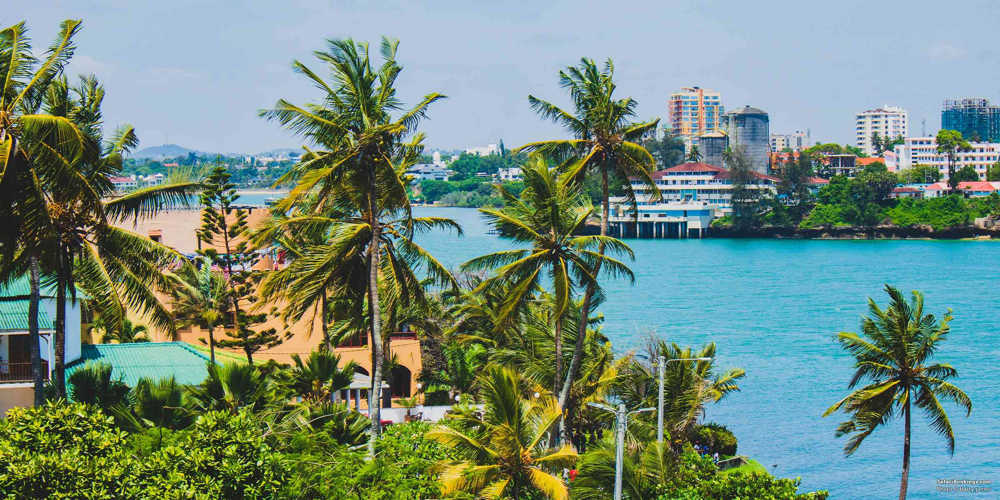
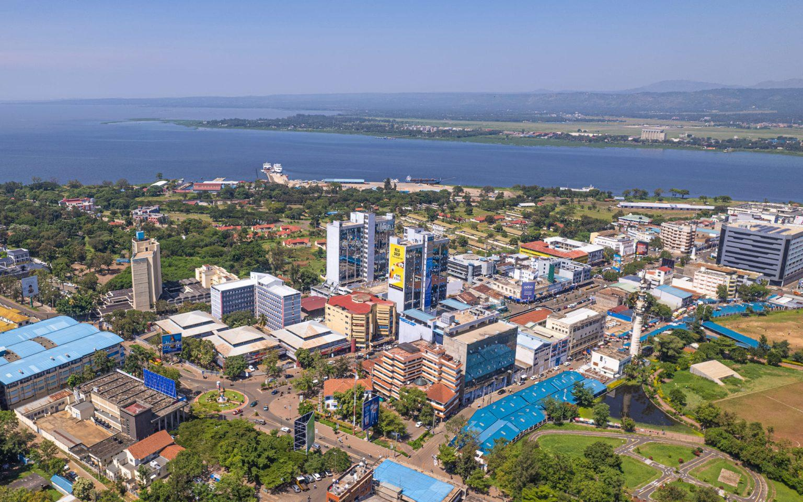
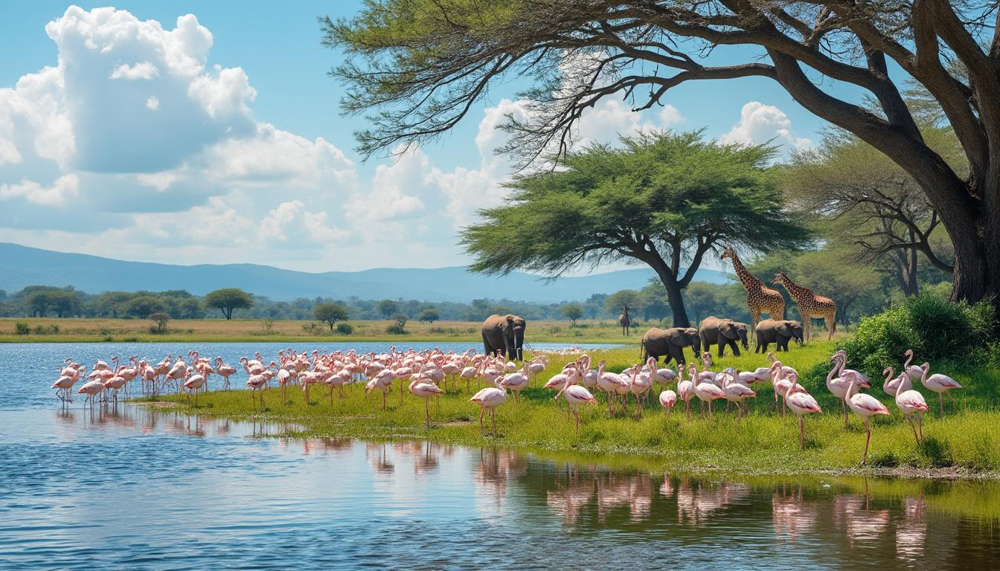
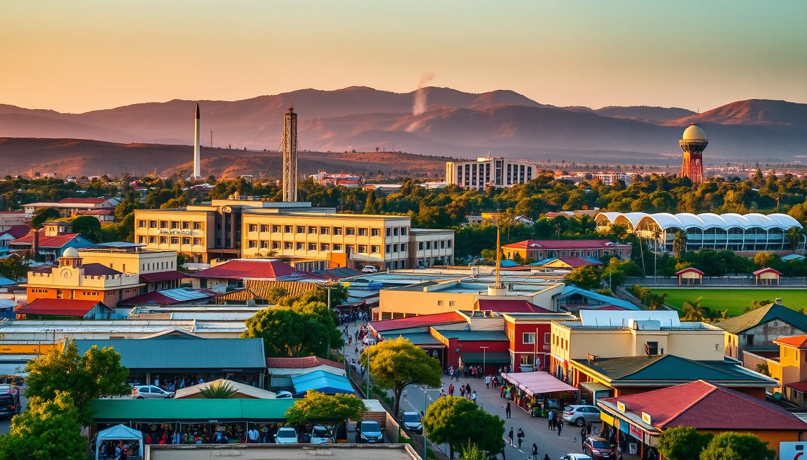
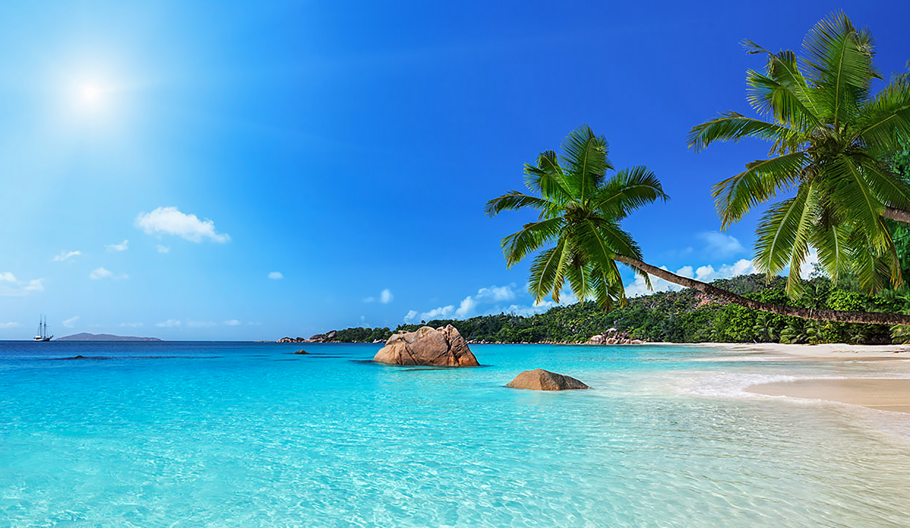
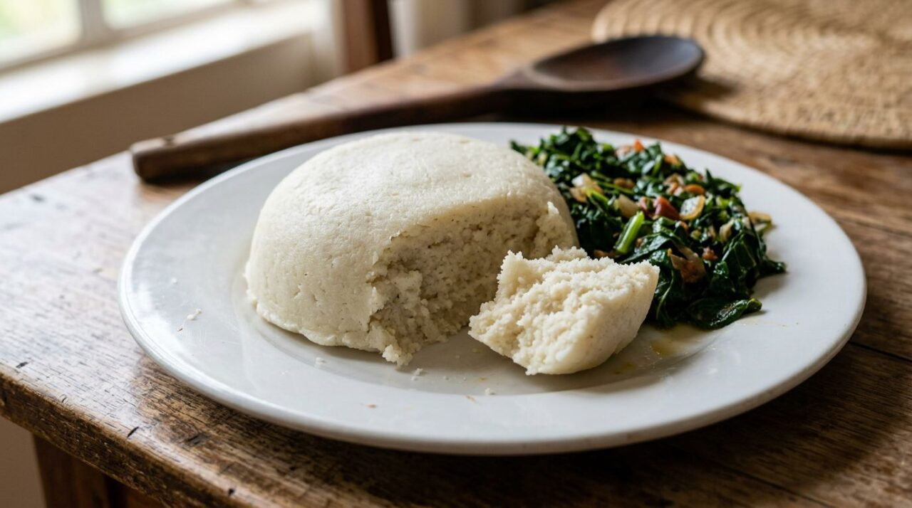
Preparazione compatta a base di farina di mais e acqua, servita come accompagnamento a verdure o stufati.
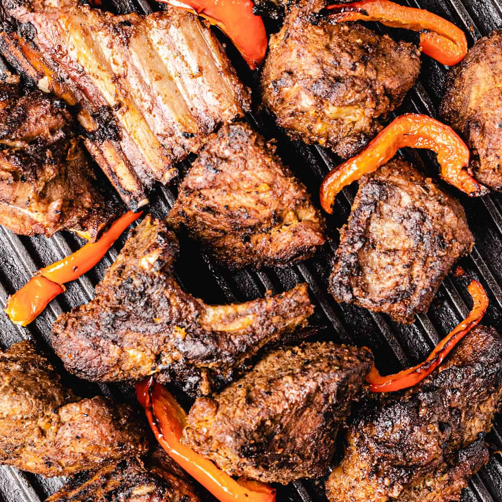
Carne arrostita alla griglia, spesso condivisa e accompagnata da ugali e kachumbari.
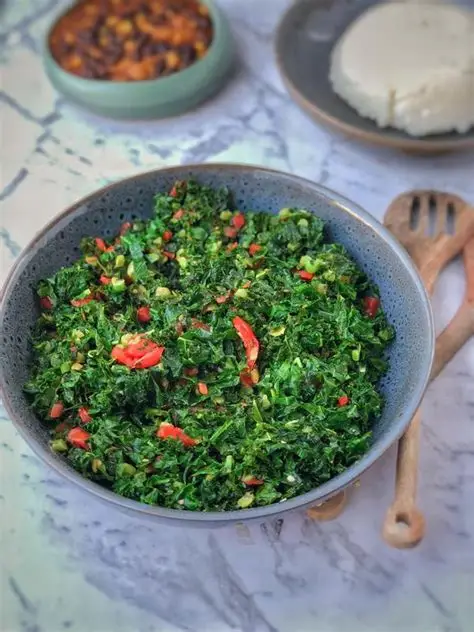
Verdure a foglia verde saltate con cipolla e pomodoro, spesso servite accanto a ugali.
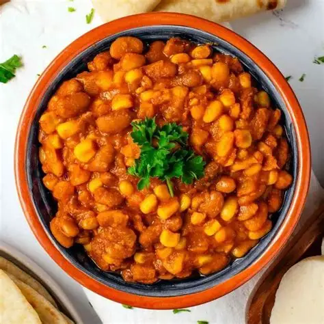
Piatto nutriente di mais e fagioli lessati, che può essere arricchito con verdure e spezie.
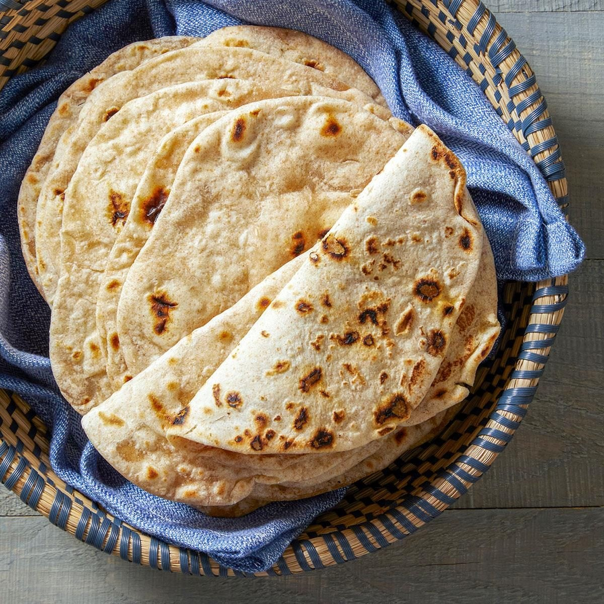
Pane piatto a strati, cotto in padella e diffuso nella cucina quotidiana del Paese.
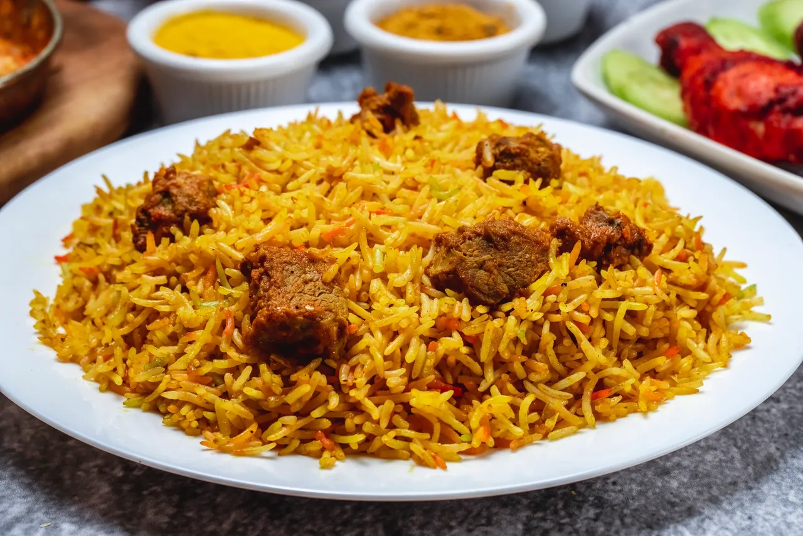
Riso speziato, spesso cucinato con carne e aromi come cardamomo, cannella e cumino.